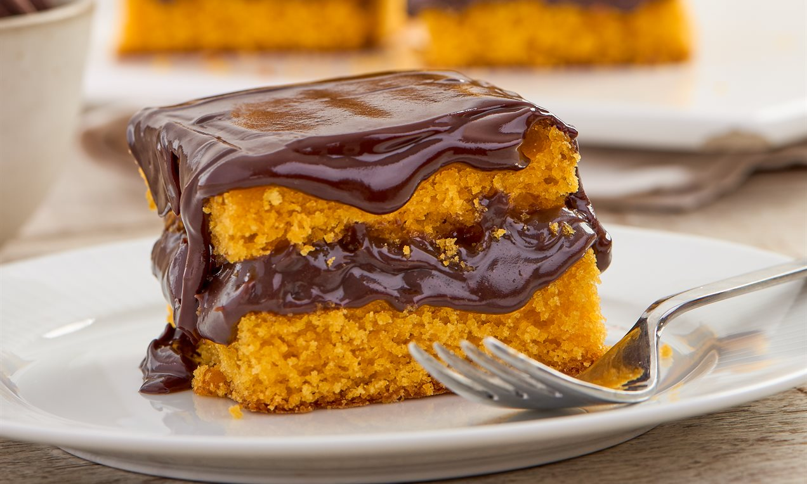

Bolo de Cenoura

Ingredientes
- 3 cenouras médias raladas
- 3 ovos
- 1 xícara de óleo
- 2 xícaras de açúcar
- 2 xícaras de farinha de trigo
- 1 colher de sopa de fermento em pó
Modo de Preparo
- Em uma tigela, misture a cenoura, os ovos e o óleo.
- Adicione o açúcar e mexa bem.
- Acrescente a farinha e o fermento.
- Despeje a massa em uma forma untada e enfarinhada.
- Asse em forno pré-aquecido a 180°C por aproximadamente 40 minutos.
Vídeo da Receita
Cobertura
- 1 xícara de chocolate em pó
- 1 colher de sopa de manteiga
- 3 colheres de sopa de leite
- 1 xícara de açúcar
Essa receita é simples, deliciosa e perfeita para qualquer ocasião.